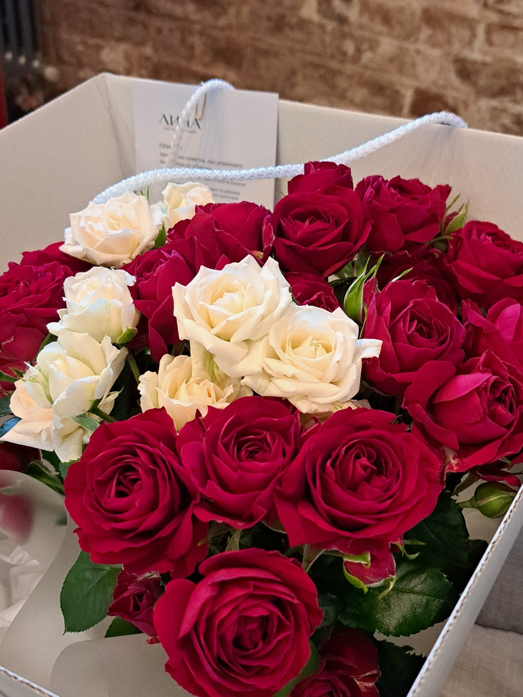
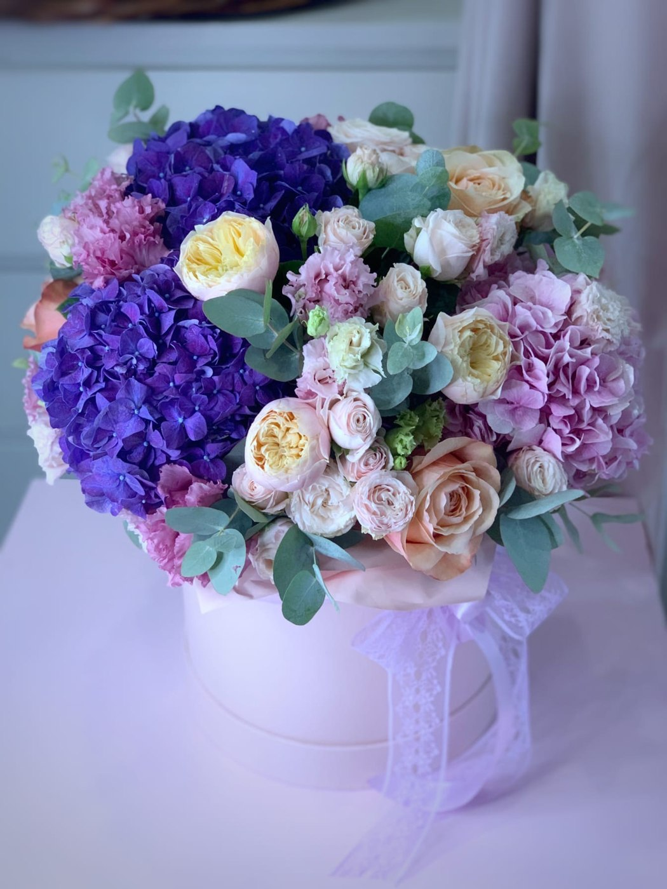
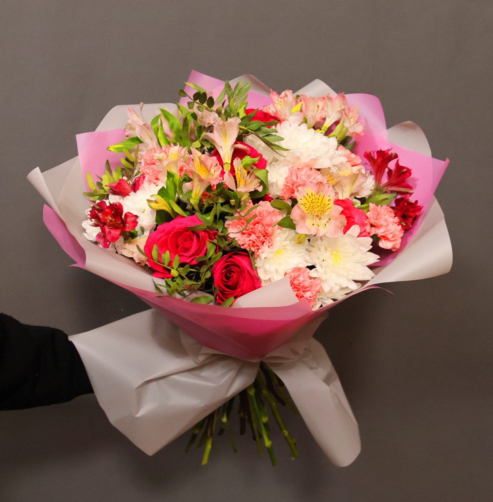
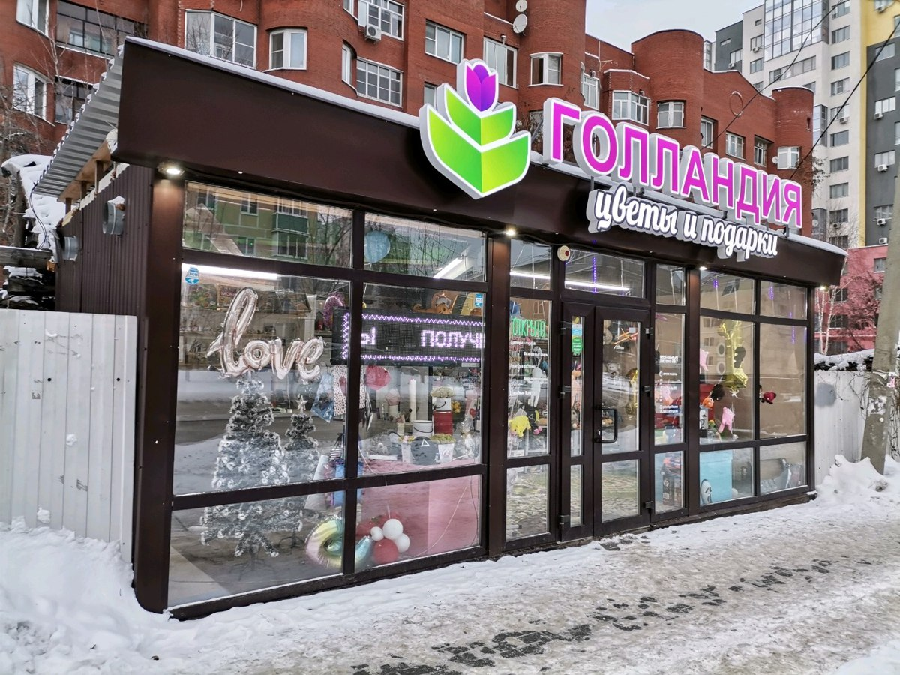
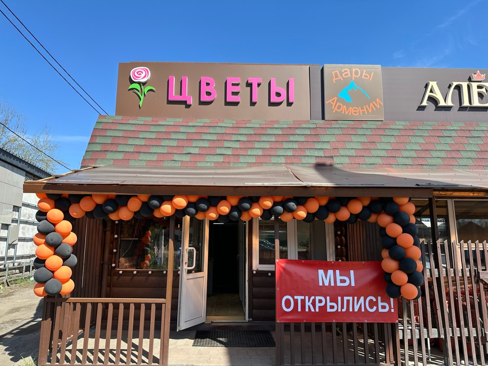

Flowerspr · Цветы и характер
Лаконичная цветочная витрина

Цветочное ателье
Почтовая открытка

Яркий букетный постер
Фотопрогулка
Ботанический альбом
Ботаническая витрина
Светлая подарочная рамка
Сдержанная фотокомпозиция

Оптовый прайс
Окно на Соборную

Праздничная афиша
Фотоконтактный лист
Разворот альбома
Типографический постер
Цветочный знак

Круглосуточный магазин
Фотоальбом букетов
Астрахань · Минималистичный знак с ножницами: бумажное ателье, тонкие линии и широкие поля.
Астрахань · Лиловый цветок в логотипе: светлая лавандовая витрина с фотографией слева.
Астрахань · Красно-белый знак рынка: фотоконтактный лист и выразительный адрес.
Астрахань · Чёрный типографический логотип, зелёный фасад: строгая редакционная композиция.
Астрахань · Цветочный логотип с жёлтой надписью: тёплая витрина и широкая светлая рамка.
Астрахань · Тёмная вывеска с золотистым письмом: салонная рамка и крупная книжная типографика.
Астрахань · Каллиграфический чёрный логотип: композиция письма с тонкой двойной рамкой.
Астрахань · Зелёный фасад и светлая вывеска Florence: архитектурная композиция с тёмным первым экраном.
Астрахань · Пастельные коробки и пышные букеты: мягкий фотоальбом с крупной рамкой.
Астрахань · Тёмный логотип с золотым кругом: строгая нумерованная салонная витрина.
Астрахань · Линейный цветок и рукописный логотип: свободное поле, фотография слева и тонкие разделители.
Астрахань · Фирменный знак Флёр с розовым акцентом: журнальная обложка и контрастные линии.
Астрахань · Лаванда и деревянная фактура логотипа: лёгкий альбом и лиловые адресные подписи.
Астрахань · Зелёный интерьер и природные композиции; в актуальной карточке название Green Art.
Астрахань · Бордовый логотип Бланш: крупная салонная композиция, кремовая типографика и сдержанные детали.
Астрахань · Голубая вывеска салона: журнальная сетка и крупная геометричная типографика.
Астрахань · Мятный фасад и яркие авторские букеты: композиция выставочной афиши.
Астрахань · Старинный фасад, красно-зелёная вывеска: адресная композиция и рамка в духе городского альбома.
Астрахань · В фотографиях актуальная вывеска Люпин: розово-зелёный разворот без придуманного логотипа.
Астрахань · Золотистый фасад с цветочной аркой: тёплая бумага и выразительная цветочная обложка.
Астрахань · Розовые тюльпаны фирменной картинки: композиция рабочего альбома с нумерацией разделов.
Астрахань · Голубой фасад и тёмная вывеска: уютные рамки со скруглёнными углами без наложений на фото.
Астрахань · Розовый венок в логотипе: тонкая салонная рамка и мягкая цветочная палитра.
Астрахань · Фирменная розовая витрина Флёр: плакатная типографика, крупная рамка и розовые детали.
Астрахань · Чёрный каллиграфический логотип с цветочным орнаментом: спокойная композиция ателье на светлой бумаге.
Астрахань · Тёмная вывеска и розовые букеты: персональное цветочное письмо с большой фотографией.
Астрахань · Серебристый ботанический логотип: воздушный растительный альбом и светлые разделители.
Астрахань · Природное направление: спокойная ботаническая витрина, без неподтверждённых экологических обещаний.
Астрахань · Прямая складская вывеска: строгая сетка, адрес крупной строкой и компактные сведения.
Астрахань · Розовая монограмма М и пастельный интерьер: мягкий цветочный альбом с широкими рамками.